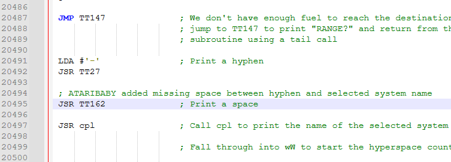
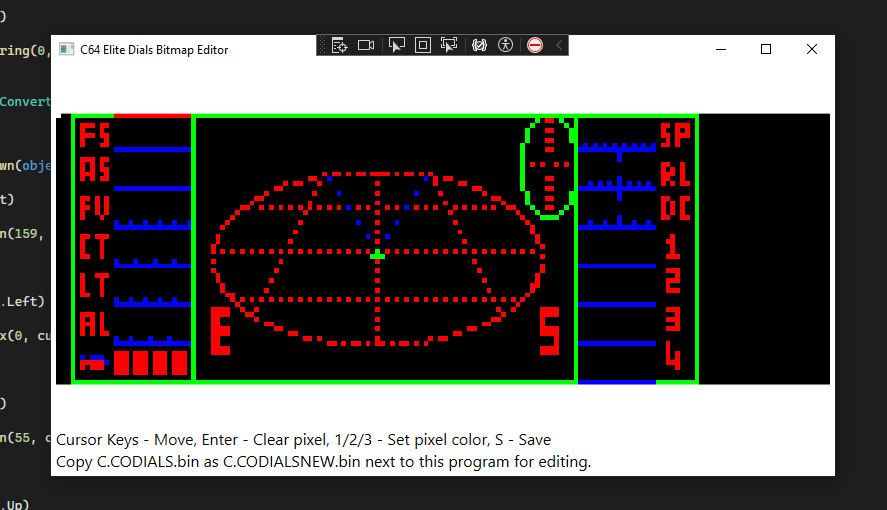
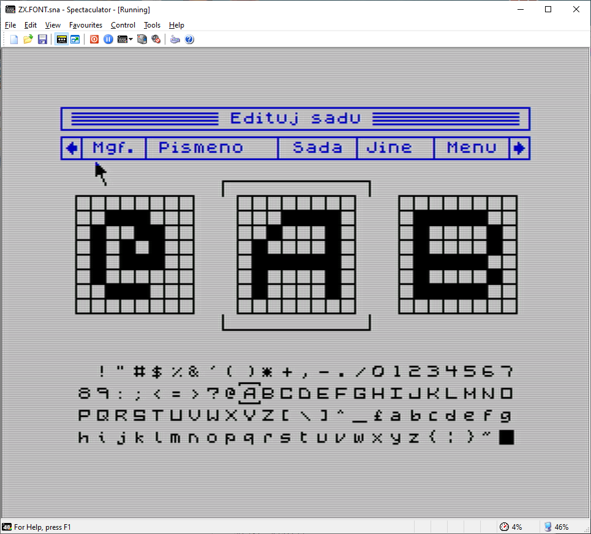
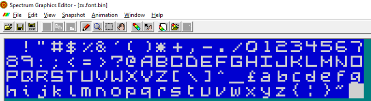

How It All Began
Return to top △It all began when I stumbled across Mark Moxon’s BBC Elite website, which explores the original Elite’s code in remarkable detail and explains how it all works. A real treasure trove for a fan of the original game.
There I found a link to the C64 version’s source code on GitHub and forked the repository to my own GitHub account. After a while, once I had the build tools working, I started making my first changes.
My first change was a simple fix: adding the missing space after the hyphen between the text and the planet name in the hyperspace message. I changed HYPERSPACE -LAVE to HYPERSPACE - LAVE. One small step for an assembly-language game programmer from the 1980s, one giant leap for me. ;)

A few more ambitious changes followed. I also wrote an editor for the instrument panel bitmap and recreated the font from the ZX Spectrum 48K version of Elite using Art Studio on the Spectrum.



I put the project aside for a while. Then, one evening, I had the idea of asking ChatGPT whether it could port the ability to fly different ships from Elite-A. The source code for that version was also available on Mark’s GitHub.
To my surprise, after a little thought, ChatGPT produced code that actually ran. It was not perfect, but it worked, and the ships flew. With ChatGPT’s help, I gradually refined the code, improved the feature and balanced the gameplay.
I kept adding more ideas, and Elite: Unbound began to take shape.
Making Room
Return to top △To fit everything into 64KB memory that was already almost full, some less essential parts of the original game had to go.
| Change | Bytes saved |
|---|---|
| Removed title music (Elite Theme) | 2,931 |
| Removed docking music (The Blue Danube) | 2,615 |
| Removed music player and supporting code | 720 |
| Removed commander checksum and competition code | 132 |
| Removed “COMPETITION NUMBER:” text | 14 |
| Dashboard PackBits RLE compression | 1,049 |
| Dashboard decompression code overhead | −85 |
| Subtotal | 7,376 |
| Other unused code and redundant instructions | 71 |
| Total net memory reclaimed | 7,447 bytes (7.27 KiB) |
Those reclaimed seven kilobytes made room for the additions that became Elite: Unbound.
Almost every byte has now been put to use. This is the remaining space in the PAL tape build with the full set of Elite: Unbound options:
| Branch | LOCODE end | Free | HICODE end | Free | RLE free |
|---|---|---|---|---|---|
| main | $3FA2 | 93 B | $CD88 | 119 B | 4 B |
| flicker-free | $3FF2 | 13 B | $CDEC | 19 B | 4 B |
The free figures show how many bytes can actually be added within the assembler and loader limits. LOCODE, HICODE and the RLE area are separate regions; the 4 B in the RLE area are split into two 2-byte gaps.
So there is barely any room left for more features and ideas. I will be happy if those last few bytes are enough for any fixes that might be needed.
A Used Ship Lot in Space
Return to top △This was what I dreamed of most while playing the original Elite: being able to fly something other than a Cobra Mk III. Do not get me wrong, the Cobra Mk III is a great all-round ship for traders. But taking a small, nimble pirate Sidewinder or a fast Asp Mk II for a spin? For me, that dream only came true when Frontier: Elite II arrived on 16-bit computers.
It was only when I discovered Elite-A, a modified version of the original BBC Elite, that I realised this was possible in the original game too. Here is the result of my implementation for the C64 version.
The selection of ships depends on the planet’s economy and whether its government is Anarchy. The technology level does not directly affect it.
| Planet economy | Standard selection | Additional ships in Anarchy |
|---|---|---|
| Rich Industrial | 10 ships | Sidewinder, Krait, Mamba |
| Average Industrial | 8 ships | Sidewinder, Krait, Mamba |
| Poor Industrial | 6 ships | Sidewinder, Krait, Mamba |
| Mainly Industrial | 5 ships | Sidewinder, Krait |
| Mainly Agricultural | 4 ships | Sidewinder, Krait |
| Rich Agricultural | 4 ships | Sidewinder, Krait |
| Average Agricultural | 3 ships | Sidewinder |
| Poor Agricultural | 1 ship | None |
The standard selection always contains the first N ships from this list, in order:
Adder → Gecko → Moray → Cobra Mk I → Cobra Mk III → Fer-de-Lance → Python → Boa → Anaconda → Asp Mk II.
For example, a Poor Agricultural system offers only the Adder. A Rich Industrial Anarchy system offers all 13 types.
The selection is fixed. Waiting or docking again will not change it. Your credits, cargo and equipment determine whether you can complete a purchase, but do not affect which ships are offered.
Under the Hood
Return to top △The figures below apply to player ships in Elite: Unbound. Ships are listed by purchase price. Sidewinder, Krait and Mamba are available only in Anarchy systems, subject to the economy limits above.
| Ship | Price (Cr) | Speed | Range (LY) | Cargo (t) | Missiles | Laser mounts | Shields | Recharge | Maneuverability |
|---|---|---|---|---|---|---|---|---|---|
| Sidewinder | 20,500 | 56 (0.47 LM) | 5 | 4 / 5 | 1 | 1 | 2 (28.6%) | 1/2/3 | 245 (102.5%) |
| Adder | 27,000 | 36 (0.30 LM) | 6 | 8 / 12 | 1 | 2 | 4 (57.1%) | 1/2/3 | 223 (93.3%) |
| Krait | 30,500 | 45 (0.38 LM) | 6 | 10 / 12 | 0 | 1 | 3 (42.9%) | 1/2/3 | 223 (93.3%) |
| Gecko | 32,500 | 45 (0.38 LM) | 7 | 9 / 11 | 2 | 4 | 5 (71.4%) | 1/2/3 | 239 (100%) |
| Moray | 36,000 | 38 (0.32 LM) | 8 | 11 / 15 | 2 | 4 | 6 (85.7%) | 1/2/3 | 239 (100%) |
| Mamba | 37,500 | 48 (0.40 LM) | 6 | 10 / 12 | 2 | 1 | 4 (57.1%) | 1/2/3 | 241 (100.8%) |
| Cobra Mk I | 39,500 | 39 (0.33 LM) | 6 | 14 / 20 | 3 | 4 | 5 (71.4%) | 1/2/3 | 207 (86.6%) |
| Cobra Mk III | 100,000 | 42 (0.35 LM) | 7 | 25 / 35 | 4 | 4 | 7 (100%) | 1/2/3 | 239 (100%) |
| Fer-de-Lance | 143,500 | 45 (0.38 LM) | 8.5 | 9 / 11 | 3 | 4 | 8 (114.3%) | 2/3/4 | 223 (93.3%) |
| Python | 205,000 | 30 (0.25 LM) | 8 | 106 / 125 | 4 | 4 | 11 (157.1%) | 1/2/3 | 175 (73.2%) |
| Boa | 240,000 | 36 (0.30 LM) | 9 | 132 / 155 | 6 | 2 | 10 (142.9%) | 1/2/3 | 191 (79.9%) |
| Anaconda | 400,000 | 21 (0.18 LM) | 10 | 215 / 253 | 16 | 4 | 13 (185.7%) | 1/2/3 | 175 (73.2%) |
| Asp Mk II | 895,000 | 60 (0.50 LM) | 12.5 | 6 / 9 | 1 | 1 | 10 (142.9%) | 1/2/3 | 223 (93.3%) |
- Speed: the raw maximum speed value from the game, followed by its LM equivalent. The conversion uses Cobra Mk III’s 42 = 0.35 LM as the reference and is rounded to two decimal places.
- Shields: the raw shield strength from the game, followed by its percentage relative to Cobra Mk III: 7 = 100%. Percentages are rounded to one decimal place; for example, Sidewinder has 2 (28.6%). These values describe relative damage resistance, not the length of the shield bars.
- Cargo: standard hold / total capacity with a Large Cargo Bay. Installed equipment takes up part of this capacity; missiles use separate hull slots.
- Laser mounts: 1 = front only; 2 = front and rear; 4 = front, rear, left and right. The figure is the number of supported positions, not fitted lasers.
- Recharge: energy points restored per recharge step, in this order: without an energy unit / with Extra Energy Unit / with Naval Energy Unit. For example, 1/2/3 means 1 point without an upgrade, 2 with Extra Energy Unit and 3 with Naval Energy Unit. Fer-de-Lance has a higher base rate, so its values are 2/3/4.
- Maneuverability: the raw handling limit from the game’s ship data, followed by its percentage relative to Cobra Mk III: 239 = 100%. Percentages are rounded to one decimal place and compare the handling parameter, not the resulting rotation speed. Higher raw values mean greater agility.
- Price: full hull purchase price before the 60% trade-in allowance for your current ship.
If your ship carries more than four guided missiles, the cockpit displays only the last four.
Pimp My Ride
Return to top △Equipment prices depend on the ship type. Ships are divided into five categories, each with its own equipment prices.
| Category | Ships |
|---|---|
| 0 | Cobra Mk III |
| 1 | Adder, Gecko, Cobra Mk I |
| 2 | Fer-de-Lance, Asp Mk II |
| 3 | Python, Boa, Anaconda |
| 4 | Moray, Sidewinder, Krait, Mamba |
| Equipment | Category 0 | Category 1 | Category 2 | Category 3 | Category 4 |
|---|---|---|---|---|---|
| Fuel - per 1 LY | 2 | 2 | 2 | 2 | 2 |
| Missile | 25 | 25 | 25 | 25 | 25 |
| Large Cargo Bay | 600 | 500 | 2,000 | 6,000 | 400 |
| E.C.M. System | 600 | 400 | 500 | 800 | 300 |
| Pulse Laser | 400 | 400 | 400 | 400 | 400 |
| Beam Laser | 1,000 | 1,000 | 1,000 | 1,000 | 1,000 |
| Fuel Scoops | 525 | 375 | 700 | 650 | 450 |
| Escape Pod | 300 | 200 | 600 | 450 | 250 |
| I.F.F. Unit | 2,500 | 1,250 | 2,500 | 1,875 | 938 |
| Extra Energy Unit | 1,500 | 900 | 2,500 | 1,900 | 700 |
| Docking Computer | 1,500 | 800 | 1,000 | 2,000 | 700 |
| Galactic Hyperdrive | 5,000 | 3,000 | 4,000 | 6,000 | 3,000 |
| Military Laser | 6,000 | 6,000 | 6,000 | 6,000 | 6,000 |
| Mining Laser | 800 | 800 | 800 | 800 | 800 |
Laser prices are per mount. Krait cannot carry missiles, even though its price category includes a missile price.
Size Matters
Return to top △A tiny ship like the Sidewinder can no longer destroy a huge Anaconda by ramming it without consequences. The smaller ship will most likely be destroyed in such a collision. The tables show collision outcomes for all player ships against all AI ships.
| Size class | Player ships | AI ships and objects |
|---|---|---|
| Debris | None | Missile, Alloy plate, Cargo canister, Splinter |
| Very small | Sidewinder | Escape Pod, Sidewinder, Thargon |
| Small | Adder, Krait, Gecko, Mamba | Boulder, Shuttle, Mamba, Krait, Adder, Gecko, Worm |
| Medium | Moray, Cobra Mk I, Cobra Mk III, Fer-de-Lance, Asp Mk II | Transporter, Cobra Mk III, Viper, Cobra Mk I, Cobra Mk III (pirate), Asp Mk II, Fer-de-Lance, Moray, Constrictor, Cougar |
| Large | Python, Boa, Anaconda | Coriolis station, Asteroid, Python, Boa, Anaconda, Rock hermit (asteroid), Python (pirate), Thargoid, Dodecahedron station |
The first column lists player ships; the remaining columns list AI ships. Each result assumes a single frontal collision, a full forward shield (255 points), full player energy (255 points) and an undamaged AI ship at its blueprint’s maximum energy. Scooping is disabled. The matrix includes escape pods and the separate pirate variants of Cobra Mk III and Python.
A number means the player survives and shows how many shield points are lost. Subtract it from 255 to find the remaining shield; player energy stays at 255. X means immediate destruction of the player.
Scroll the matrix horizontally to see all AI ships. The player-ship column and column headings remain visible while scrolling.
| Player ship / AI ship | Escape Pod | Shuttle | Transporter | Cobra Mk III | Python | Boa | Anaconda | Viper | Sidewinder | Mamba | Krait | Adder | Gecko | Cobra Mk I | Worm | Cobra Mk III (pirate) | Asp Mk II | Python (pirate) | Fer-de-Lance | Moray | Thargoid | Thargon | Constrictor | Cougar |
|---|---|---|---|---|---|---|---|---|---|---|---|---|---|---|---|---|---|---|---|---|---|---|---|---|
| Sidewinder | 136 | 208 | X | X | X | X | X | X | 163 | 237 | 232 | 234 | 227 | X | 207 | X | X | X | X | X | X | 138 | X | X |
| Adder | 68 | 144 | 208 | 255 | X | X | X | 255 | 81 | 173 | 168 | 170 | 163 | 237 | 143 | 255 | 255 | X | 255 | 242 | X | 69 | 255 | 255 |
| Krait | 68 | 144 | 208 | 255 | X | X | X | 255 | 81 | 173 | 168 | 170 | 163 | 237 | 143 | 255 | 255 | X | 255 | 242 | X | 69 | 255 | 255 |
| Gecko | 68 | 144 | 208 | 255 | X | X | X | 255 | 81 | 173 | 168 | 170 | 163 | 237 | 143 | 255 | 255 | X | 255 | 242 | X | 69 | 255 | 255 |
| Moray | 34 | 72 | 144 | 203 | 255 | 255 | 255 | 198 | 40 | 86 | 84 | 85 | 81 | 173 | 71 | 203 | 203 | 255 | 208 | 178 | 255 | 34 | 254 | 254 |
| Mamba | 68 | 144 | 208 | 255 | X | X | X | 255 | 81 | 173 | 168 | 170 | 163 | 237 | 143 | 255 | 255 | X | 255 | 242 | X | 69 | 255 | 255 |
| Cobra Mk I | 34 | 72 | 144 | 203 | 255 | 255 | 255 | 198 | 40 | 86 | 84 | 85 | 81 | 173 | 71 | 203 | 203 | 255 | 208 | 178 | 255 | 34 | 254 | 254 |
| Cobra Mk III | 34 | 72 | 144 | 203 | 255 | 255 | 255 | 198 | 40 | 86 | 84 | 85 | 81 | 173 | 71 | 203 | 203 | 255 | 208 | 178 | 255 | 34 | 254 | 254 |
| Fer-de-Lance | 34 | 72 | 144 | 203 | 255 | 255 | 255 | 198 | 40 | 86 | 84 | 85 | 81 | 173 | 71 | 203 | 203 | 255 | 208 | 178 | 255 | 34 | 254 | 254 |
| Python | 34 | 36 | 72 | 101 | 253 | 253 | 254 | 99 | 40 | 43 | 42 | 42 | 40 | 86 | 35 | 101 | 101 | 253 | 104 | 89 | 248 | 34 | 127 | 127 |
| Boa | 34 | 36 | 72 | 101 | 253 | 253 | 254 | 99 | 40 | 43 | 42 | 42 | 40 | 86 | 35 | 101 | 101 | 253 | 104 | 89 | 248 | 34 | 127 | 127 |
| Anaconda | 34 | 36 | 72 | 101 | 253 | 253 | 254 | 99 | 40 | 43 | 42 | 42 | 40 | 86 | 35 | 101 | 101 | 253 | 104 | 89 | 248 | 34 | 127 | 127 |
| Asp Mk II | 34 | 72 | 144 | 203 | 255 | 255 | 255 | 198 | 40 | 86 | 84 | 85 | 81 | 173 | 71 | 203 | 203 | 255 | 208 | 178 | 255 | 34 | 254 | 254 |
For example, a fully shielded Cobra Mk III survives a collision with an undamaged Anaconda, but loses all 255 points of its forward shield. An Anaconda hitting a Sidewinder loses only 40 shield points.
For equal size classes, collision damage is 128 plus half the AI ship’s current energy, rounded down. A collider one class smaller causes half that damage; two or more classes smaller cause one quarter, again rounded down. A collider one class larger adds 64 points, capped at 255. A collider two or more classes larger destroys the player immediately.
These are player-versus-AI results, not a symmetric simulation of two player ships. The colliding AI object is marked for removal. Ordinary collision damage goes directly to the struck shield without the hull’s shield-strength modifier. With depleted shields or energy, a collision marked as survivable here may be fatal. Stations and missiles use separate collision routines; debris and asteroids are listed by size above but are not ship columns in this matrix.
Licence Plates
Return to top △Player and AI ships in Elite: Unbound now carry their own registration IDs. Your registration appears on the Status screen, while the I.F.F. Unit lets you read the registration of a targeted AI ship. The same IDs identify the sender and recipient in radio messages.
Scramble Ship ID
In Anarchy systems, pirates offer the special Scramble Ship ID service on the Equip Ship screen for 5,000 Cr. Once purchased, the service disappears from the equipment list while your registration remains scrambled. Buying the service does not itself change your legal status.
A scrambled registration can be useful in a pirate career. If your ID is scrambled and your legal status is Fugitive, each newly spawned human pirate has a 50% chance of being neutral towards you. This check also applies separately to individual members of a pirate pack. A neutral pirate can still retaliate if attacked; Thargoids and mission ships are excluded from this rule.
Scrambling hides your existing registration as ??-??? on the Status screen and in radio messages. Pirate AI ships also conceal their registrations.
Approaching a station
In Multi-Government, Communist, Confederacy, Democracy and Corporate State systems, entering a station’s safe zone with a scrambled ID immediately raises your internal legal record to at least 100, making you a Fugitive. A higher existing value is preserved.
A commander with Clean or Offender status therefore becomes Fugitive immediately, even without committing another offence. An existing Fugitive keeps that status, but a record below 100 is raised to 100. For reference, Clean means a legal-record value of 0, Offender means 1 to 49, and Fugitive means 50 or more.
When this check raises your legal record, the station sends a radio warning addressed to ??-???: SCRAM PIRATE!, RUN PIRATE! or DIE PIRATE! If your record is already 100 or more, this check does not send another warning.
Anarchy, Feudal and Dictatorship systems ignore scrambled registrations. Entering their station safe zones does not cause this penalty or warning. This exemption applies only to the concealed ID and does not clear an existing criminal record.
Player registration
A ship registration consists of two letters from A to Z and a number from 001 to 255, for example JS-042, the starting registration of Commander Jameson. New registrations are generated using the game’s normal random-number generator.
The two letters and the number are stored in the commander save, so a valid registration survives saving and loading. If a loaded registration contains an invalid letter or the number 000, the game replaces it with a newly generated one.
Restoring a visible ID
- Buying another ship: every successful purchase gives the new ship a newly generated, visible registration. Your existing legal record is preserved.
- Using an Escape Pod: the replacement ship receives a newly generated, visible registration. The Escape Pod also clears your criminal record, restoring Clean status.
- Continuing after death: the game restores the last saved commander, including the registration and its scrambled state. A visible ID in that save becomes visible again; an ID saved as scrambled remains scrambled. Death itself does not guarantee a readable ID.
- Default JAMESON: starting over with the default commander restores the visible registration JS-042.
AI registrations in the local bubble
The local bubble is the area of space the game currently simulates around your ship. AI registrations use a separate 8-bit generator called an LFSR. Its starting state combines the current system’s coordinates, the galaxy number and the market randomiser for that visit. It does not advance the normal random-number generator, so assigning registrations does not change other gameplay events.
Each newly created ship or object receives the next non-zero value in the sequence. The generator visits all 255 values before repeating, so the numeric part does not repeat within those first 255 allocations. The two letters are derived from that number, the system coordinates, the galaxy and the market randomiser.
The assigned number stays with the AI ship throughout its time in the bubble, even when the game rearranges its internal ship slots. Resetting the bubble clears the AI registration table and restarts the generator.
This is a local identification system, not a galaxy-wide register of permanently unique IDs. After 255 allocations the sequence repeats, and the game does not check whether a previous holder is still present. A complete match with the player’s registration is displayed as ??-??? for the AI ship; matching only the numeric part does not hide it.
Space Is Not a Dump!
Return to top △You can now jettison unwanted cargo from your ship into space. Dumping it near a station, however, can cost you your clean record.
Press Ctrl + 2 in flight to open the Jettison screen. Each confirmed selection ejects one 1t cargo canister. The controls are described in In-Flight Cargo Jettison.
Every successfully jettisoned canister inside a station’s safe zone adds 15 points to your internal legal record. The penalty affects your legal status without deducting any credits. Repeated offences accumulate, up to a maximum record of 255.
Starting from Clean, the first penalised jettison raises your record from 0 to 15 and changes your status to Offender. Four such jettisons raise it to 60, making you a Fugitive, provided nothing else changes your record in between.
The consequences can begin even before you become a Fugitive: bounty hunters turn hostile at a legal-record value of 40 or more. Three penalised jettisons from a clean record already reach 45.
Anarchy systems tolerate dumping even inside a station’s safe zone. All other governments apply the penalty, including Feudal and Dictatorship. Outside a station’s safe zone, jettisoning cargo adds no legal-record points in any system. Open Space is big.
Pattern Is Full
Return to top △Stations have received an upgrade: an approach corridor and basic air traffic control (ATC), complete with radio messages. When the player or an AI ship occupies the corridor, the station holds its routine departures to keep the docking approach clear.
The approach corridor
The monitored area is a cylinder extending from the docking face towards the planet, along the station’s docking axis. It has a radius of 200 game units and a length of 2,240 units, equivalent to seven Coriolis station diameters. It begins 160 units from the station’s centre and ends 2,400 units from it. Its circular cross-section keeps the check consistent as the station rotates.
The game tests the position of each ship’s centre. A ship blocks the corridor whenever its centre lies inside the cylinder, regardless of its size, heading or whether it is actively docking. The player is checked first, followed by AI ships in the local bubble. Missiles, cargo canisters, escape pods, debris, rocks and asteroids, including rock hermits, do not block departures.
Holding departures
Before launching a Shuttle or Transporter, the station checks that the corridor is clear. If it finds a blocking ship, that launch attempt is cancelled. The station keeps no departure queue: once the corridor is clear, a later normal random launch attempt can succeed.
Police Vipers have priority and can launch even when the corridor is occupied. Ships launched by Anacondas or rock hermits are outside this station traffic-control system.
Radio communication
A blocked launch attempt prompts the station to send DOCK OR LEAVE to the first blocking ship found. For example, C1-007:AB-123, DOCK OR LEAVE identifies the station as C1-007 and the ship occupying the corridor as AB-123.
A station’s registration encodes its type and location. The first letter is C for a Coriolis station or D for a Dodecahedron station. The next digit is the galaxy number, from 1 to 8. The three digits after the hyphen give the system’s internal index, from 000 to 255. Thus C1-007 identifies a Coriolis station in galaxy 1, in the system with index 7.
The game finds this index by generating the current galaxy’s system sequence from the beginning until it reaches the current system, counting from zero. The same station therefore keeps the same ID on later visits. Station registrations are always visible.
The recipient can be the player or an AI ship. Hidden registrations appear as ??-???, following the same rules as other radio messages. The instruction is simple: finish docking or move out of the corridor so regular departures can resume.
Someone Is Listening
Return to top △Radio communication gives nearby ships and stations a voice. In Elite: Unbound, transmissions are short, pre-written messages triggered by specific events. The game checks what happened and which ship is involved, then selects a message from the appropriate group.
Who transmits and when
Traders, hostile pirates, hostile bounty hunters and hostile police currently have a 50% chance of transmitting after a qualifying spawn. Each group has its own probability setting in the source code. If the roll succeeds, one of its three messages is selected with equal probability. Station messages are triggered directly by the relevant event and do not use this 50% roll.
| Sender | Trigger | Possible messages |
|---|---|---|
| Pirate | A hostile pirate is successfully spawned, either alone or as part of a pack. | YOU ARE DEAD! PREPARE DIE! SCUMBAG! |
| Trader | The trader spawn routine successfully creates a Cobra Mk III, Python, Boa or Anaconda. | HAVE NICE TRIP HELLO JUST PASSING |
| Bounty hunter | A separately spawned ship has both the bounty-hunter and hostile flags. | WRONG PLACE! HERE WE GO! MY BOUNTY! |
| Police | A Viper launches from a hostile station, or a random police Viper is spawned while the player’s legal record is 40 or more. | STOP NOW! WE FOUND YOU! SURRENDER! |
| Station traffic control | A ship in the approach corridor blocks a routine departure. | DOCK OR LEAVE |
| Station registration check | A scrambled ID causes the station safe-zone check to raise the player’s legal record to 100. | SCRAM PIRATE! RUN PIRATE! DIE PIRATE! |
A pirate pack gets one transmission roll after all its members have been processed. The first successfully created pirate that remains hostile supplies the sender’s ID. The whole pack therefore sends at most one message; a pack with no hostile members sends none. A separately spawned pirate gets its own single roll.
Addressing and reception
Messages use the format SENDER:RECIPIENT, MESSAGE. AI ship transmissions are addressed to the player; station traffic control can address the player or the AI ship blocking the corridor. Registrations follow the rules in Licence Plates, including ??-??? for concealed identities. The radio system receives these messages automatically.
Each received message produces one short beep. In a 3D space view, the text appears immediately. On a chart, the Status screen or another in-flight information screen, it is held until you return to a space view, then displayed without a second beep.
There is room for only one pending communication. A newer message replaces the older pending one, with no priority between senders. There is no message history. Pending communication is cleared when the flight state resets, including docking, launching, hyperspace, using an Escape Pod or dying.
Fitting the radio into memory
The implementation reuses Elite’s centred flight-message routine, with a dedicated radio token numbered 2. Its display counter starts at 100 instead of the usual 20, giving the longer messages more time on screen. These are internal counter values, not seconds.
The selected message and both registration IDs are kept stable for display. For a pending message, the IDs are copied when it arrives, so the sender can leave the local bubble without changing the eventual text. This also matters when erasing a visible message: Elite draws the same text again using XOR to remove it without damaging the background.
Message texts are stored once and selected through compact offset tables. The shared punctuation is added by the printing routine. To save HICODE space, some of the handling code and the message texts occupy space in the original dashboard buffer freed by RLE compression.
Delivery Boy
Return to top △Special Cargo brings Elite-A’s courier contracts to Elite: Unbound. These small consignments can include urgent documents, medical supplies or less reputable packages. You can carry only one active contract at a time. It occupies no ordinary cargo space and cannot be sold or jettisoned through the commodity screens.
Taking a contract
Press Ctrl + 1 while docked to see the available destinations and their entry fees. Enter a contract number and press Return to accept it. The fee is deducted immediately; without enough credits, the contract is not accepted. An empty list displays NO CONTRACTS.
After acceptance, VALUE shows the remaining payment due on delivery. Reopening the screen displays the active contract without charging again. Inventory also shows its destination and value. Press W on either chart to select the destination and display its name and distance; the controls are described in Special Cargo Deliveries.
Delivering without losing value
The delivery has no countdown timer. Its value changes when you dock, so the number of intermediate station stops matters more than the number of hyperspace jumps.
| Event | Effect on the contract |
|---|---|
| Dock at the destination | The remaining value is paid automatically, once, and the contract ends. |
| Dock at any other station | The remaining value is halved, rounded down to the nearest 0.1 Cr. Returning to the departure station also counts. |
| Make an ordinary hyperspace jump | The value stays unchanged until you dock. |
| Use galactic hyperspace | The contract is cancelled without payment. |
If halving reduces the value to zero, the contract expires. The entry fee is not refunded, so your net earnings are the final payment minus that fee and your travel expenses. A destination can require several jumps: offer generation does not check your ship’s range or whether a complete route is available.
How offers are generated
The offer list is calculated from the current game state: the market randomisation byte, current system coordinates, legal record, the low byte of the combat kill tally, galaxy number, player ship type and previous delivery coordinates. The code combines these values using XOR and 8-bit addition and subtraction.
The result determines a requested count from 0 to 15 and the intervals at which candidate systems are considered while stepping through the galaxy’s system sequence. The current location is excluded. The search stops when it has enough offers or reaches the end of a single galaxy traversal, so the actual list can be shorter.
No new flight random numbers are drawn to generate the offers. With the same inputs, reopening the menu gives the same list. Completing, losing or cancelling a delivery leaves its old target coordinates in memory, where they contribute to the next offer calculation.
Fees, rewards and legality
The price calculation takes the larger of the destination’s distance in internal map units and a value from 0 to 31 derived from the destination’s system data and the offer state. A bitwise OR with the contract’s legal-record increment produces a pricing byte, V. The entry fee and initial payment are then built from that byte using Elite-A’s original integer shifts.
The exact calculation is F = floor(257 × V / 8), where floor means rounding down. The entry fee is F / 10 Cr and the initial payment is (256 × V + (F mod 256)) / 10 Cr; mod gives the division remainder. For example, V = 40 gives a fee of 128.5 Cr and an initial payment of 1,024.5 Cr.
For a Clean commander, the legal-record increment is always zero. For a commander with an existing record, the generator derives a candidate increment from the destination’s system data and the offer state. It is used only if it is smaller than the current record; otherwise the increment is zero. Acceptance adds the resulting amount to the legal record.
This addition preserves Elite-A’s 8-bit wraparound: values above 255 wrap back through zero. It does not clamp at 255, so accepting a contract can also lower a sufficiently high record through overflow.
Saving the delivery
Only four persistent bytes are needed: two for the remaining reward in tenths of a credit and one for each destination coordinate. A zero reward means there is no active contract. Saving and loading preserve these values; older saves without them start with no delivery. New commanders and Default JAMESON clear all four bytes.
The offer list is rebuilt when needed. Its six temporary tables use 96 bytes of the save/load staging area while the docked menu is open. Delivery progress is separate from the original story-mission flags, so a payment can be processed on the same docking that triggers a mission briefing.
Catch Me If You Can
Return to top △A Fer-de-Lance bounty hunter should have a reason to hunt you. The original spawn path could make it hostile even towards a Clean commander. The fix lets a newly created Fer-de-Lance bounty hunter start neutral when your legal record is below 40.
| Legal record | Player status | Normal bounty-hunter spawn |
|---|---|---|
| 0 | Clean | Neutral |
| 1-39 | Offender | Neutral |
| 40-49 | Offender | Hostile |
| 50-255 | Fugitive | Hostile |
The spawn routine first combines the ship blueprint’s flags with the flags for that particular encounter. The fix then checks both the Fer-de-Lance hull type and the bounty-hunter role. Below 40, it clears only the hostile flag, preserving the ship’s role, AI aggression and registration. At 40 or more, the normal hostile spawn remains hostile.
The existing tactics routine continues to watch your legal record. If it reaches 40 while a neutral hunter is already present, that hunter becomes hostile. Attacking it also provokes retaliation, even if you are Clean. Once the ship is hostile, lowering your record does not automatically make it neutral again.
A neutral hunter does not send the hostile bounty-hunter taunts on arrival. That radio check requires both the bounty-hunter and hostile flags. Becoming hostile later does not repeat the spawn-time communication roll.
The fix is enabled by bountyhunterfix=yes. It applies when new Fer-de-Lance bounty hunters are created; it does not retrospectively change ships already present in an emulator snapshot.
One Is Not Enough!
Return to top △A single guided missile used to destroy an AI ship outright, regardless of its remaining energy. In Elite: Unbound, a missile hit instead removes 81 energy points. A small Sidewinder can still be destroyed by one hit, but a larger, undamaged ship can take several.
The damage is applied to the target’s current energy. If it has fewer than 81 points before the hit, it is marked for destruction. With 81 or more, the game subtracts 81 and lets it survive. There is one detail in the subtraction: a ship with exactly 81 points survives with zero energy. The missile itself is destroyed after the hit in either case.
| AI ship | Full energy | After one hit | Hits to destroy |
|---|---|---|---|
| Sidewinder | 70 | Destroyed | 1 |
| Mamba | 90 | 9 | 2 |
| Cobra Mk III | 150 | 69 | 2 |
| Thargoid | 240 | 159 | 3 |
| Python, Boa | 250 | 169 | 4 |
| Anaconda | 252 | 171 | 4 |
These examples use AI ship energy values and assume full starting energy, successful missile hits, no regeneration and no other damage between hits. They do not describe the player’s shields or energy banks.
An Anaconda therefore has 171, 90 and then 9 energy points left after three hits; the fourth destroys it. In combat, laser damage can reduce the number of missiles needed, while the AI’s energy regeneration between hits can increase it. Missiles become a way to inflict heavy damage or finish off a weakened target, without guaranteeing an immediate kill against every ship.
The change is enabled by realmissiledamage=yes, independently of unbound. Space stations remain immune to missiles. This option changes missile damage against AI targets; it leaves the existing damage from a missile explosion near the player unchanged.
They Are All Around!
Return to top △Ships in the original game can appear in recognisably repetitive positions. The hostile-ship setup uses fixed high-byte distances on all three axes, while some coordinates reuse a random value from the decision that created the encounter. Traders and floating objects have their own narrow placement pattern.
The Elite-A position routine rand_posn gives encounters a wider spread. It resets the ship workspace, chooses random horizontal and vertical signs and offsets, and calculates a forward distance from those offsets. It is used by the common hostile-ship setup and by the routine that places traders and floating objects.
In the coordinate representation, x_hi and y_hi range from 0 to 31, with random low bytes and signs. The forward distance is calculated from these offsets and stays positive. These encounters are therefore spread across the space ahead of the player, rather than a full 360-degree sphere.
The existing encounter rules still decide when a spawn is attempted and which types are eligible. Station departures keep their dedicated launch positioning. In Elite: Unbound, pirate packs also give each member its own low-byte offsets within the pack’s shared position, so the group stays together without every ship occupying exactly the same point.
The Elite-A placement routine is enabled with randomspawns=yes. The additional scattering of pirate-pack members is part of unbound=yes.
It's working! It's working!
Return to top △Steering or firing with the joystick should not stop the keyboard from responding. In the original input path, joystick activity sends the handler through the joystick code and then out without scanning the keyboard. This can make a keyboard command appear to do nothing while a direction or the fire button is held.
The fix follows Elite 128: after reading joystick directions, fire and the configured axis reversals, RDKEY continues into scanmatrix. The joystick’s control entries remain in the key logger, and pressed keyboard keys are added during the same pass.
You can therefore keep steering with the joystick while using the keyboard to change speed, operate missiles or E.C.M., open charts and issue other commands. The existing key assignments and joystick axis settings still apply.
Joystick mode is selected in the usual way: press the fire button on the rotating title-ship screen. The fix then allows both input sources to work together during each scan.
Enabled with inputfix=yes, independently of unbound. The change adds a jump to the existing keyboard scanner after joystick processing.
Who Cares?
Return to top △Some improvements are small enough to disappear into ordinary play. Floating debris should stay behind when you jump away, and a planet description should remain on screen long enough to read.
Leaving the junk behind
The in-system jump on J works by moving the planet and sun relative to the player. The original code leaves other objects in the local bubble in place, so cargo canisters, asteroids and escape pods seem to travel along with you.
With warpjunk=yes, an accepted jump first removes the objects counted as junk. That includes escape pods, alloy plates, cargo canisters, boulders, asteroids, splinters, Shuttles, Transporters and rock hermits. Their scanner markers are erased before their slots are removed, including the correct I.F.F. markers, so no frozen blips remain.
The cleanup runs only after all jump checks have passed. A blocked attempt, for example when facing a nearby planet or sun, leaves the objects in place. The usual restrictions from other ships, a station or witchspace still apply.
A moment to read
A long Data on System description can run past the bottom of the screen. The original text routine immediately clears the screen to print the remainder, making the first page disappear before it can be read.
With planetdatafix=yes, the first page stays visible and the overflowing text is held in a temporary buffer. Release the key that opened the page, then press and release a game key to show the continuation. Both the press and release are consumed by the page handler, so holding the opening key cannot skip the first page.
This is handled through the normal game loop. Flight and the hyperspace countdown continue while you read, and temporary flight messages are prevented from overwriting the waiting page. The final page behaves as an ordinary Data on System screen and remains open until you select another view. Short descriptions need no extra key press.
The continuation uses the existing 256-byte save/load staging area while that area is idle. Its size is checked by the assembler, and a runtime bound prevents the text from reaching the ship blueprints that follow it in memory.
It Is... Circular!
Return to top △Drawing a circle means calculating a series of points and joining them with lines. The original routine repeatedly multiplies the radius by sine values to obtain each point’s horizontal and vertical offsets. On a 6502-family processor, those multiplications take useful time away from the rest of the game.
The optimisation uses the circle’s symmetry. Before drawing, BuildCircleSinCache calculates the products needed for the first quarter of the circle and mirrors them into a 32-byte cache. The drawing loop then reads the cached values for both coordinates, applying the original signs and centre offsets.
| Angular step (STP) | Original calculations | With cache |
|---|---|---|
| 8 | 18 | 3 |
| 4 | 34 | 5 |
| 2 | 66 | 9 |
The figures count calls to the sine-product routine FMLTU2 per circle, including the closing point. Angles use the game’s 64-step circle, so a smaller STP produces more segments. These are calculation counts, not measured FPS gains.
The point order, line clipping and stored line coordinates remain the same. The cached lookup also restores the processor’s carry flag as the original calculation did, keeping the sign changes exact. The circle therefore retains its original shape and detail.
The shared CIRCLE2 routine draws the planet’s outline, chart circles and the rings of the launch and hyperspace tunnels, so all of these benefit. The cache is rebuilt for each circle’s radius and step size.
Enabled with renderspeedups=yes, independently of unbound.
Too Fast!
Return to top △When a scene is simple or the processor is accelerated, the original game can run its flight loop much faster. That also speeds up movement and other logic tied to the loop. The frame limiter, based on Elite 128, gives each iteration a minimum of four video frames.
The raster interrupt increments a counter once per complete video frame. The FrameLimit routine waits until the counter reaches four, then resets it. If the previous iteration has already taken at least four frames, execution continues immediately.
| Video standard | Nominal video rate | Maximum game-loop rate |
|---|---|---|
| PAL | 50 Hz | 12.5 FPS |
| NTSC | 60 Hz | 15 FPS |
These are approximate upper limits for game-loop updates. The video display keeps its normal refresh rate. A busy scene can still run more slowly; the limiter only waits when there is time to spare.
The same limiter also controls the rotating ship on the title screen. Sound remains driven by the video interrupt, once per frame. The result is a more consistent pace in fast scenes and on accelerated hardware, including the C128 border turbo described below.
Enabled at build time with fpslimiter=yes. The option is independent of unbound and has no in-game toggle.
Turbo
Return to top △On a Commodore 128 running in C64 mode, Elite: Unbound uses the processor’s 2 MHz mode during the screen borders. While the bitmap and dashboard are being displayed, it returns to 1 MHz so the VIC-IIe can fetch the graphics correctly.
Switching speed with the raster
The raster is the current scanline being drawn by the video chip. The game’s raster interrupt handler has three stages per video frame. It writes 0 or 1 to the C128 clock register $D030 to select 1 or 2 MHz.
| Raster line | Action | CPU speed afterwards |
|---|---|---|
| 40 | Set up the upper screen and restore normal speed before visible bitmap and sprite fetching. | 1 MHz |
| 194 | Switch to the dashboard display and update sound and the frame counter. | 1 MHz |
| 250 | Enable turbo in the bottom border and schedule the next interrupt for line 40 of the following frame. | 2 MHz |
The 2 MHz interval continues through the bottom border and the top of the next frame. The internal raster state cycles through 0 → 1 → $FF → 0. The extra border interrupt only handles the speed transition and scheduling; sound and the frame counter still advance once per frame at the dashboard interrupt.
How much extra time is available?
On PAL, the nominal turbo interval covers 102 of the frame’s 312 scanlines, about 32.7% of the frame. NTSC uses the same switching lines but has a shorter border interval. The benefit depends on the work the game is doing, and the frame limiter still caps the main loop when enabled. The border percentage is not a measured increase in frame rate.
Keeping display and loading stable
The upper-screen and dashboard interrupts perform their time-critical video-register writes before taking the helper call that restores 1 MHz. Only the border interrupt takes the separate turbo path. This keeps the bitmap/dashboard split aligned with the video chip’s display fetches.
Before KERNAL loading or saving disables the raster interrupts, the game explicitly selects 1 MHz. Restart code does the same before waiting for the raster. These paths therefore do not depend on a disabled interrupt to restore normal speed.
The feature is included automatically with unbound=yes. The same binary writes the clock register on both machines: a standard C64 ignores these speed-control writes and keeps its normal clock. On the C128, no extra player setting is needed. The helper code uses spare space around the RLE dashboard data, with its location and limits checked by the assembler.